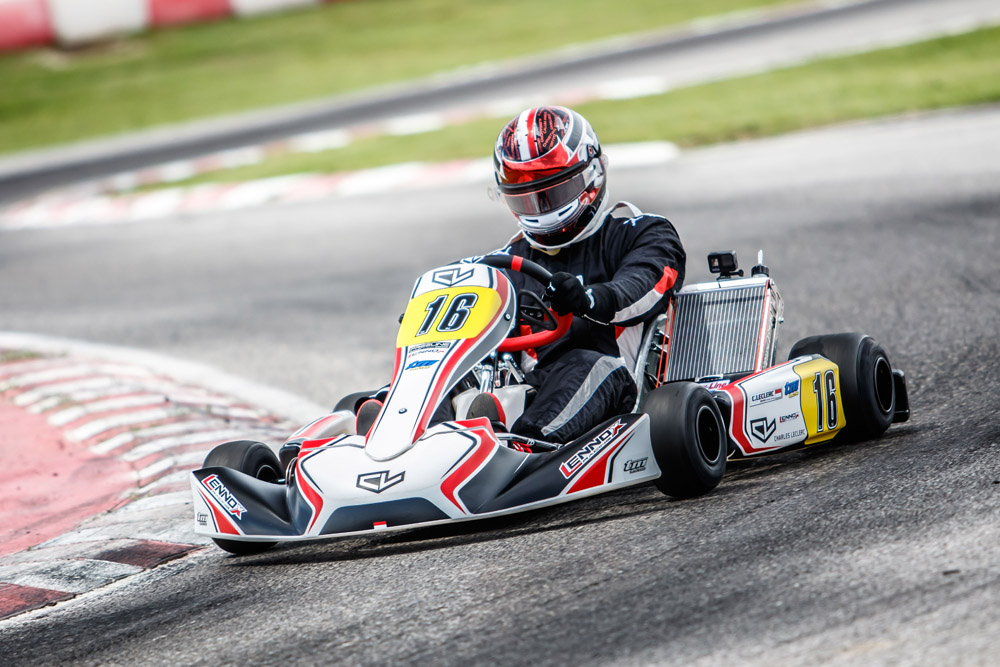
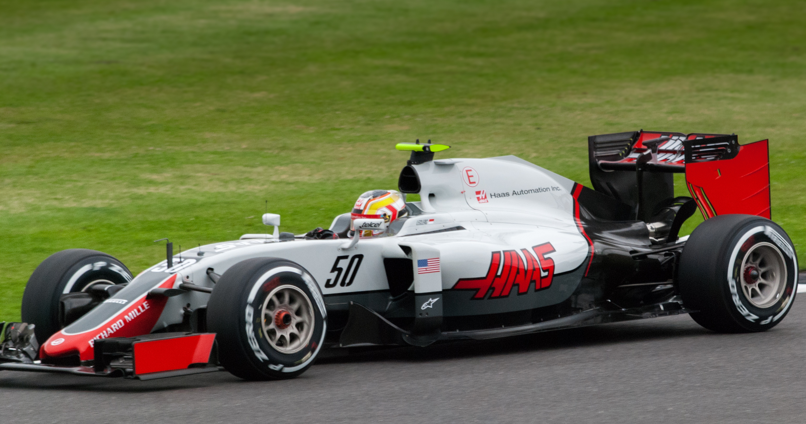

Early career
Karting
2005–2013: Karting
Leclerc began his karting career in 2005, winning the French PACA Championship in 2005, 2006, and 2008. In 2009 he became French Cadet champion before moving up to the KF3 class in 2010, where he won the Junior Monaco Kart Cup. He continued in the KF3 class for 2011, winning the CIK-FIA KF3 World Cup, the CIK-FIA Karting Academy Trophy and the ERDF Junior Kart Masters. During the year, Leclerc also became a member of Nicolas Todt's All Road Management company. Leclerc graduated to the KF2 category in 2012 with the factory-backed ART Grand Prix team, winning the WSK Euro Series title,as well as finishing runner-up in the CIK-FIA European KF2 Championship and the CIK-FIA Under 18 World Karting Championship. In his final year of karting in 2013, Leclerc won the South Garda Winter Cup and claimed sixth position in the CIK-FIA European KZ Championship and finished second in the CIK-FIA World KZ Championship, behind current Red Bull Formula One driver Max Verstappen.
2014–2016: Formula Renault, Formula Three, and GP3
In 2014, Leclerc graduated to single-seaters, racing in the Formula Renault 2.0 Alps championship for British team Fortec Motorsports. During the season, he took seven podium positions, including a double victory at Monza, to finish runner-up in the championship behind Koiranen GP's Nyck de Vries.Leclerc also won the Junior Championship title at the final race of the season in Jerez, finishing ahead of teenager Matevos Isaakyan.Leclerc also took part in a partial Eurocup Formula Renault 2.0 season with Fortec as a guest driver. In the six races he contested he finished on the podium three times, taking a second place at the Nürburgring followed by a pair of second-place finishes at the Hungaroring.Leclerc racing in the 2015 European Formula 3 Championship Leclerc graduated to Formula Three in 2015, racing in the FIA Formula 3 European Championship with Dutch team Van Amersfoort Racing. At the opening round of the season in Silverstone, Leclerc inherited pole position for the second and third races of the weekend after original pole-sitter Felix Rosenqvist was excluded for a technical infringement. He went on to take his first race victory in the third race of the weekend, ahead of Antonio Giovinazzi and Jake Dennis. He took his second victory at the following round in Hockenheim, winning the third race as well as taking two additional podiums and three rookie victories over the course of the event. Leclerc scored his third win in the first race at Spa-Francorchamps which saw him take the lead in the championship. However, Leclerc finished fourth in the standings, mostly due to damage sustained to his car's chassis following a collision with Lance Stroll at Zandvoort.In November 2015, Leclerc finished second at the Macau Grand Prix.In December 2015, Leclerc partook in post-season testing with ART Grand Prix and Arden International. In February 2016, de Vries confirmed that Leclerc would race in the 2016 season. ART signed Leclerc the following week. With the team, he claimed three victories and took the title in Abu Dhabi, despite crashing out in the feature race.

2017: FIA Formula 2 Championship
The week following his victory in the GP3 title race, Charles Leclerc was confirmed to be graduating to the Formula 2 series for the 2017 season with Prema Racing, alongside fellow GP3 racer and Ferrari junior Antonio Fuoco.He made his debut at Bahrain, where he took pole position for the feature race, but only finished third. In the sprint race, his Prema team chose to take a mid-race pit stop, which is very uncommon in the shorter sprint races. He pushed harder on his medium Pirelli tyres, creating a nine-second lead before pitting. This would drop him down to 14th place, but Leclerc overtook 13 cars and took victory by overtaking Luca Ghiotto on the final lap. After taking pole position for the second time in a row, he then fought off Ghiotto to win again in the Catalunya feature race, despite a radio issue.Leclerc did not score any points at his home round at Monaco. He was on pole but retired from the lead of the race with a suspension problem. The retirement also meant he would start the sprint race from the back of the grid, and in this race, he collided with Norman Nato whilst trying to make his way up the grid, which ultimately resulted in both drivers retiring from the race. He retained the championship lead despite the bad weekend, which he described as 'hugely disappointing'. Leclerc took a fourth consecutive pole at a race Azerbaijan, which he dedicated to his late father, Herve. He converted this into another win, although the race was red-flagged five laps before the scheduled end. In the sprint race, he started from eighth, and dropped to tenth early on, but fought back to sixth. The retirement of the race leader, his title rival Oliver Rowland, and De Vries, who was also ahead of Leclerc, meant Leclerc improved to fourth. He then passed Nicholas Latifi and Jordan King, and began to close on the new leader, Nato. He passed Nato, but had been given a ten-second penalty for failing to slow for yellow flags, and therefore finished second.In Austria he took his fifth pole position, and then won the feature race from pole despite coming under pressure from teammate Fuoco, and towards the end, the DAMS of Latifi. He would retire from the sprint race after colliding with Fuoco and spinning out. By taking pole for the sixth time for the next race, at Silverstone, he matched the record for most pole positions in a row, which was set by Stoffel Vandoorne in 2014 and 2015, when the series were called GP2 Series. He won the feature race, even after his car set alight during the race, and even after one of his wing mirrors detached in the closing stages.He would not start from pole in Hungary, despite taking his seventh successive pole position, as he was disqualified for a technical infringement. Despite starting from the back, he was in 12th position by turn 1. Using an alternative tyre strategy that saw him start on the medium tyres, Leclerc was stuck behind Alexander Albon, who was on the same strategy, although he eventually got past and would finish fourth. He would also finish fourth in the sprint race the next day, giving him a 50-point championship lead over Rowland.For the Belgian rounds, Leclerc again took pole and won the race by a convincing margin of over 20 seconds, however, his win was disqualified as one of his skidblocks was excessively worn. Having to start in 19th place, Leclerc got back up to fifth place and finished 3.8 seconds behind race winner Sérgio Sette Câmara.For the Italian feature race, Leclerc was battling for the lead; on the final lap, however, he was involved in an accident with De Vries. After starting towards the back of the grid for the second consecutive sprint race, Leclerc managed to fight his way back to ninth position, albeit out of the points.With a 57-point margin over Rowland heading into the penultimate rounds at Jerez, Leclerc gained his eighth pole position of the season, with both of his timed laps being good enough for pole position. In the feature race, Leclerc dominated most of the early stint on soft tyres and was able to overtake most of the runners on the alternate strategy. With seven laps to go, however, Nobuharu Matsushita collided with Santino Ferrucci, which brought out the safety car. At the point that the race resumed, Leclerc was misinformed over team radio that it was the "last lap" even though there were four laps to go, so after pushing hard to build a gap Leclerc's tyres were "overheated badly" with several laps still to run, yet despite his tyres being "completely gone" by the end Leclerc managed to hold off a charging Rowland by 0.23 seconds, and claim the FIA Formula 2 championship in his rookie season in the main F1 feeder series.In claiming the championship, Leclerc became the youngest ever champion of the main support series for Formula 1 at 19 years, 356 days old, and the first driver since Nico Hülkenberg in 2009 to win the championship in their rookie season (a feat which only Nico Rosberg and Lewis Hamilton have previously accomplished) and is the only driver to claim a championship with the Dallara GP2/11 chassis in their rookie season.For the sprint race, Leclerc started in eighth place, however, due to his car's aggressive setup, he and his teammate, Antonio Fuoco, had to pit in the sprint race. Due to the aggressive pace of Leclerc however, he rose through the field, yet because of the excessive wear on his tyres, he conceded three positions on the final lap and finished in seventh position.For the final rounds at Abu Dhabi, Leclerc qualified in sixth place for the Feature race, his lowest starting position all season excluding penalties. Despite this, however, he managed to finish the highest of the alternate strategy runners in Abu Dhabi (Soft then Super Soft) in fourth place (he had made it up till third until the final corner of the final lap where he was pipped by Antonio Fuoco). This position however was subsequently changed to second after the race winner, Oliver Rowland, and Fuoco were disqualified for excessive floor wear and under-inflated front tyres respectively.For Leclerc's final race, he started in seventh position. He was initially able to make up two places but was running slower than the race leaders Alexander Albon and Nicholas Latifi. As the race progressed, however, Leclerc started gaining time compared to his rivals and managed to take Latifi with a few laps to go. For the final three laps, DRS was disabled and yellow flags in the final sector meant that Leclerc was stuck behind Albon, however on the final lap, both drivers tangled, triggered by Leclerc nudging Albon, and both had a drag race which they constantly were pushing each other until Leclerc finally took the lead and won by 1.293 seconds, his final victory in his last F2 race.
Formula One career
In 2016, Leclerc joined the Ferrari Driver Academy and he acted as development driver for Haas F1 Team and Scuderia Ferrari. As part of his role as development driver, Leclerc participated in the first practice session of the British and German Grands Prix driving for Haas. It was believed that if Leclerc won the GP3 Series championship, he would follow Daniil Kvyat and Valtteri Bottas direct from GP3 into F1 with Haas. However this was debunked by Haas team principal Guenther Steiner who said that Leclerc would progress to the 2017 FIA Formula 2 Championship. In 2017, he took part in the mid-season Hungaroring test following the Hungarian Grand Prix, driving the Ferrari SF70H. He was the fastest on the first day of the test, running 98 laps in the process and he did not take part in the second day's test. Kimi Räikkönen also praised Leclerc saying "It's not easy to do well in a different car from what you normally drive. But Leclerc has shown great progress, and for sure he will do great things in the future". Sauber (2018) Leclerc racing for Sauber at the 2018 Chinese Grand Prix For the 2018 Formula One World Championship, Leclerc signed for the Sauber F1 Team as a race driver, replacing Pascal Wehrlein and alongside Marcus Ericsson. This marked the first appearance of a Monégasque Formula One driver since Olivier Beretta in 1994.At the Azerbaijan Grand Prix, a sixth-place finish saw him become the second Monégasque driver to score points in Formula One after Louis Chiron, who finished third at the 1950 Monaco Grand Prix. At his first home race in Formula One, Leclerc suffered a brake failure in the closing laps, colliding into the back of Brendon Hartley and forcing both cars into retirement. Three consecutive points finishes followed before a run of five races without points. This run included three retirements; a loose wheel in Britain, suspension damage after colliding with Sergio Pérez in Hungary, and a multi-car accident in Belgium caused by Nico Hülkenberg which resulted in Fernando Alonso being launched over the top of Leclerc's car. More points finishes came with ninth in Singapore and seventh in Russia, before retirements from a mechanical failure in Japan and damage from a collision with Romain Grosjean in the United States. He ended the season with three consecutive seventh-place finishes in the final three races. Leclerc out-qualified teammate Ericsson seventeen times from twenty-one races and finished 13th in the championship with 39 points. Ferrari (2019–present) 2019 season Leclerc at the 2019 Chinese Grand Prix Scuderia Ferrari signed Leclerc for the 2019 season, replacing 2007 World Champion Kimi Räikkönen, who took his place at Sauber (now Alfa Romeo). While initially only announced for 2019, a few days later, then-Ferrari team principal Maurizio Arrivabene indicated that Leclerc's contract was going to be four seasons long, running "at least until 2022." Leclerc made his first test day as an official Ferrari race driver in November 2018 during the end of season test. In his first Grand Prix driving for Ferrari, he started and finished in the fifth position at the Australian Grand Prix. In his second qualifying for Ferrari, at the Bahrain Grand Prix, he qualified on pole position for the first time in his Formula One career, having the fastest times in two of the three practice sessions and in all three qualifying sessions, setting a new track record, and becoming the youngest Ferrari pole-sitter. Leclerc led for the majority of the race, but lost the lead and was overtaken by Lewis Hamilton and Valtteri Bottas due to his engine dropping a cylinder with a failed fuel injector. A late-race safety car prevented the charging Max Verstappen from taking third place, leading to the first podium of Leclerc's Formula One career. In China, Leclerc qualified fourth behind Vettel. After overtaking his teammate during the start, he was asked to yield and let Vettel pass, eventually finishing the race in fifth.[66] In Azerbaijan, he was the favourite for pole position until a crash in the second qualifying session ended his contention. He started eighth after penalties for the two Alfa Romeos and finished the race fifth with an extra point for the fastest lap of the race. At the following race in Monaco, he was eliminated in Q1 and started 15th due to Ferrari's erroneous strategy that kept him in the garage to save tyres, underestimating track evolution at the end of the qualifying session. He suffered a puncture and severe floor damage after a failed attempt to pass Nico Hülkenberg, leading to his second retirement at his home race. Leclerc qualified and finished third in Canada, his second podium finish, behind the controversial 1–2 finish of Hamilton and teammate Sebastian Vettel. He would finish third again in France. At the Austrian Grand Prix, he qualified on pole position, the second pole of his Formula One career. He subsequently finished second after colliding with Red Bull's Max Verstappen, having led for the major part of the race.The incident was investigated by the stewards after the race, who deemed it a racing incident and decided against taking action. Leclerc at the 2019 Austrian Grand Prix At the British Grand Prix, Leclerc qualified in third ahead of Max Verstappen. He eventually finished the race in third place and was also voted 'Driver of the day' for defending his position against numerous attacks by Verstappen during the early stages of the race. This was his fourth consecutive podium finish of the season. Despite having finished in the top two in all the three practice sessions, Leclerc qualified in tenth place at the German Grand Prix after an issue with the fuel system prevented him from setting a lap time in the final qualifying session. In what turned out to be a sensational rain-hit race, he made his way up to fourth in the early laps. A questionable tactic by his team's strategists of installing soft tyres despite the track being too wet culminated in him losing control and crashing into the barriers on lap 29, leading to his second retirement of the season. At the Hungarian Grand Prix, Leclerc suffered a rear-end crash in qualifying but still completed the session. He ultimately finished the race in fourth place. Leclerc (right) defending his position from Hamilton (left) at the 2019 Italian Grand Prix At the first race after the summer break, the Belgian Grand Prix, Leclerc took his third pole position of the season alongside teammate Sebastian Vettel in second—the second Ferrari front-row lockout of the season. During the race, Leclerc fended off the charging Mercedes of Lewis Hamilton to record his maiden Grand Prix win, making him the youngest ever Ferrari race winner. After the race, he dedicated his maiden victory to his former competitor Anthoine Hubert, who was killed in an accident during the previous day's Formula 2 feature race at the same circuit. At the Italian Grand Prix, Leclerc won the race from pole position after defending his position from both Mercedes drivers and became the first Ferrari driver to win at Monza since Fernando Alonso won there for the team in 2010. He scored his third consecutive pole in Singapore. Initially leading the race, he finished in second place after he was undercut by teammate Vettel. In Russia, he took his fourth consecutive pole position and his sixth of the season. Vettel passed Leclerc into the first corner and led for the first half of the race before the team orchestrated an undercut in Leclerc's favour to let him retake the lead. Vettel retired from the race shortly after with a hybrid system failure, bringing out the virtual safety car. This greatly benefited the Mercedes drivers, who made their pit stops and eventually finished the race ahead of Leclerc in third. Leclerc qualified in second in Japan, but took damage in a first-lap collision with Max Verstappen. He would go on to finish the race in sixth place, his worst finish of the season. Leclerc took his seventh pole position of the year in Mexico after Verstappen—who had qualified in first place—was handed a grid penalty for a yellow flag infringement. He went on to finish the race in fourth place. After another fourth-place finish in the United States, a controversial collision with teammate Vettel caused Leclerc's third retirement of the season in Brazil, ending both drivers' races. Leclerc ended the season with a third-place finish in Abu Dhabi. Leclerc ended the 2019 season in fourth place in the championship with 264 points, ahead of teammate Vettel. During his first season at Ferrari, he recorded ten podium finishes, two wins, four fastest laps, and the most pole positions of any driver that season, with seven. Leclerc, therefore, became the first non-Mercedes driver to win the Pole Position Award. He also became the first Monégasque to win a Formula One World Championship Grand Prix (although Louis Chiron had won several Grands Prix before the inaugural championship in 1950). 2020 season Leclerc driving at the 2020 Tuscan Grand Prix Leclerc qualified seventh for the 2020 Austrian Grand Prix. The team struggled for pace in the race but due to the chaotic race recovered to finish second with Leclerc pulling off crucial overtaking manoeuvres on fresh tyres after the final restart. In the build-up to the Styrian Grand Prix weekend, Leclerc and Ferrari were investigated by the FIA after allegedly breaching the governing body's strict COVID-19 safety protocols after returning home to Monaco (with permission from his team) in between the Austrian and Styrian Grands Prix events with social media posts showing Leclerc socialising with fans, friends and his girlfriend. Leclerc initially denied any wrongdoing. However, Leclerc and Scuderia Ferrari were given a warning after it was clear he had been in contact with people not included in his bubble. In the qualifying session for the 2020 Styrian Grand Prix, he ended up 11th fastest in a full wet session and was knocked out in Q2. He was demoted to 14th after receiving a three-place penalty for impeding Daniil Kvyat in the session. In the race, Leclerc collided with his team-mate Sebastian Vettel on the first lap, causing them both to retire. Despite the fact the stewards took no action – viewing the collision as a racing incident and gave no penalties to either driver – Leclerc accepted full responsibility for the collision saying in one of his post-race interviews, "I've been a total asshole, today I fucked it up". At the next race, the Hungarian Grand Prix, Leclerc qualified sixth, one place behind Vettel. In the race, Leclerc struggled with tyre wear and general lack of speed and finished in 11th place, five places behind teammate Vettel. Leclerc qualified fourth at the British Grand Prix and went on to finish third, claiming the 12th podium finish of his F1 career and second of the season.For the 70th Anniversary Grand Prix Leclerc qualified eighth. He subsequently pulled off a one-stop strategy to advance to fourth in the race. Before competing in the 70th Anniversary Grand Prix in 2020 at Silverstone, Leclerc reacted angrily to accusations that he was racist and opposed to the Black Lives Matter movement, responding by saying racism is "disgusting" and accusing headlines of attempting to manipulate his words. The accusations came after he was one of six drivers who opted not to take a knee during the pre-race ceremonies of the opening events of the 2020 Formula One World Championship as part of the sports anti-racism campaign. He stated that he chose not to take a knee due to the negative political connotations he felt such a gesture could have. At the 2020 Italian Grand Prix he qualified thirteenth but in the race, he crashed out at Parabolica on lap 24, while he was in fourth, thanks to a pitstop earlier than others who pitted during a Safety Car period. The crash caused a red flag. Starting from round 12 at Portimão, Leclerc went on to take three consecutive top-5 finishes. At the rain-hit Turkish Grand Prix, Leclerc was running in third place after producing a comeback from 14th on the intermediate tyres. However, a mistake while attempting to pass Sergio Pérez for second on the final lap resulted in Leclerc running wide and losing the podium to teammate Vettel. The doubleheader in Bahrain was rather forgettable for Leclerc, who finished tenth in the first race and retired after a first-lap collision with Pérez in the second. At the final round in Abu Dhabi, both Ferraris lacked pace and finished outside the points, with Leclerc in 13th ahead of Vettel. Leclerc finished the championship in eighth, scoring 98 points. 2021 season Leclerc at the 2021 Austrian Grand Prix Leclerc is due to drive for Ferrari until the end of 2024. Leclerc had a new teammate at Ferrari for 2021 with Carlos Sainz Jr. replacing Sebastian Vettel, who signed for Aston Martin. Leclerc started the Bahrain Grand Prix in fourth behind Valtteri Bottas and finished sixth. He then started fourth and also finished fourth at the Emilia Romagna Grand Prix behind Lando Norris after struggling to keep his pace after the red flag at the middle of the race. He spent half of the race without a radio. Leclerc then finished sixth at the Portuguese Grand Prix which placed him fifth in the points standings, above his teammate Sainz, who finished 11th in the race. He qualified on pole for his home event- the Monaco Grand Prix despite crashing in the final part of qualifying but was unable to start the race due to suffering a driveshaft issue on his way to the grid. He qualified for back-to-back poles during Qualifying for the 2021 Azerbaijan Grand Prix., later finishing fourth. At the British Grand Prix at Silverstone, Leclerc qualified fourth but inherited the lead of the race on lap 1, passing Valtteri Bottas at the start and taking advantage of a collision between title rivals Verstappen and Hamilton. Leclerc held on to the lead of the race until 2 laps to go when he was ultimately caught and overtaken by Hamilton, finishing the race in second place and claiming his first and only podium of 2021. At the Hungarian Grand Prix, Leclerc was hit from the side by Lance Stroll on turn 1 and did not finish. In Italy, Leclerc finished in fifth, promoted to fourth after Sergio Perez's penalty. Leclerc took grid penalties in the 2021 Russian Grand Prix and started from 19th. He was in the top 5 at one point but fell to fifteenth by the end of the race after heavy rain fell and he was the last to pit for intermediate tyres. In Turkey, Leclerc would qualify fourth, but would start third after engine penalties for Lewis Hamilton. In Abu Dhabi, a decision to pit under a virtual safety car proved to be the wrong one as Leclerc failed to make up for the lost track position. This resulted in him finishing only tenth. Meanwhile, teammate Sainz finished third, moving him up to fifth in the drivers' standings and dropping Leclerc to seventh. This marked the first time Leclerc had been beaten by a teammate in his car racing career. 2022 season Leclerc took pole in the season opening Bahrain Grand Prix, his tenth career F1 pole. He won the Grand Prix, his and Ferrari's first Formula 1 victory since 2019, battling closely with Red Bull driver Max Verstappen throughout the race. His Ferrari teammate Carlos Sainz finished second for a Ferrari 1–2. Leclerc received 25 points, plus an additional 1 point for the fastest lap of the race, bringing his total to 26. The result meant he and Ferrari took the lead in the Drivers' and Constructors' Championship respectively. In doing so, he led the Formula One World Championship for the first time, and also became the first-ever Monégasque driver to lead the Formula One World Championship. After a second-place finish in the in the Saudi Arabian Grand Prix, Leclerc took a dominant victory in the Australian Grand Prix, achieving his first grand slam in Formula One.